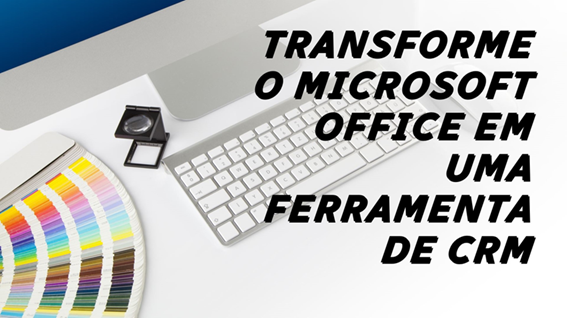

Microsoft Office como um CRM
1. Introdu��o
O Microsoft Office — amplamente reconhecido como um conjunto de ferramentas essenciais para produtividade, mas seu potencial vai muito al�m disso. Combinando o poder do Excel, Word, Access e Outlook, o Office pode ser transformado em uma solu��o completa de CRM (Customer Relationship Management). Este artigo explora como essas ferramentas podem ser integradas e personalizadas para gerenciar contatos, leads, automatizar tarefas, gerar dashboards e muito mais.
O Excel, com suas capacidades avan�adas de an�lise de dados e automação via VBA (Visual Basic for Applications), — ideal para gerenciar e analisar grandes volumes de informa��es. O Word, por sua vez, — perfeito para criar documentos personalizados, como contratos, propostas e relat�rios detalhados. Quando combinados, essas ferramentas oferecem uma solu��o poderosa e acess�vel para empresas que desejam gerenciar seus relacionamentos com clientes de forma eficiente.
2. Gerenciamento de Leads
Leads s�o potenciais clientes que demonstraram interesse em seus produtos ou servi�os. O gerenciamento eficaz de leads — essencial para converter essas oportunidades em vendas. O Excel pode ser usado para criar uma base de dados de leads, armazenando informa��es como nome, e-mail, telefone e status do lead. Com o VBA, — poss�vel automatizar o acompanhamento desses leads, enviando e-mails personalizados ou atualizando automaticamente o status com base em intera��es registradas.
Al�m disso, o Access pode ser integrado para armazenar grandes volumes de dados de leads, enquanto o Word pode ser usado para gerar propostas personalizadas para leads qualificados. Essa integra��o entre as ferramentas do Office garante um fluxo de trabalho eficiente e organizado.
3. Gera��o de Dashboards
Dashboards s�o ferramentas visuais que permitem monitorar m�tricas e indicadores-chave de desempenho (KPIs) em tempo real. O Excel, com suas tabelas din�micas e gr�ficos, — ideal para criar dashboards personalizados. Com o VBA, — poss�vel automatizar a atualiza��o desses dashboards, garantindo que as informa��es estejam sempre atualizadas.
Por exemplo, voc� pode criar um dashboard para acompanhar o progresso de vendas, o status de leads e a taxa de convers�o. Esses dashboards podem ser compartilhados com a equipe de vendas ou ger�ncia, fornecendo insights valiosos para a tomada de decis�es estrat�gicas.
4. Integra��o com Outlook
A integra��o do VBA com o Outlook — uma das caracter�sticas mais poderosas do Microsoft Office para a automação de tarefas de CRM. Com o VBA, voc� pode programar o Excel ou Access para enviar e-mails personalizados diretamente do Outlook, permitindo que voc� se comunique com seus clientes e leads de maneira eficiente e personalizada. Por exemplo, — poss�vel configurar alertas autom�ticos para acompanhar o progresso de vendas ou enviar lembretes de reuni�es.
5. Comunica��o com CRMs Externos
O Microsoft Office tamb�m pode ser integrado a CRMs externos, como o Salesforce, para importar e gerenciar dados diretamente no Excel. Abaixo est� um exemplo de como usar VBA para se comunicar com o Salesforce e importar contatos para uma planilha.
Exemplo de C�digo VBA para Comunica��o com Salesforce
Sub ImportarContatosSalesforce()
Dim http As Object
Dim JSON As Object
Dim URL As String
Dim token As String
Dim response As String
Dim contatos As Object
Dim i As Integer
' URL da API do Salesforce
URL = "https://yourInstance.salesforce.com/services/data/v52.0/query/?q=SELECT+Name,Email+FROM+Contact"
' Token de autentica��o (substitua pelo seu token v�lido)
token = "Bearer SEU_TOKEN_DE_AUTENTICACAO"
' Criar objeto HTTP para requisi��o
Set http = CreateObject("MSXML2.XMLHTTP")
http.Open "GET", URL, False
http.setRequestHeader "Authorization", token
http.Send
' Verificar resposta
If http.Status = 200 Then
response = http.responseText
Set JSON = JsonConverter.ParseJson(response)
Set contatos = JSON("records")
' Preencher planilha com os contatos
For i = 1 To contatos.Count
Sheets("Contatos").Cells(i + 1, 1).Value = contatos(i)("Name")
Sheets("Contatos").Cells(i + 1, 2).Value = contatos(i)("Email")
Next i
MsgBox "Contatos importados com sucesso!", vbInformation
Else
MsgBox "Erro ao acessar o Salesforce: " & http.Status & " - " & http.statusText, vbExclamation
End If
End Sub
Este exemplo requer uma chave de autentica��o v�lida do Salesforce e a biblioteca JSON para VBA. Certifique-se de configurar as refer�ncias necess�rias no Editor VBA antes de executar o c�digo.
6. Conclus�o
O Microsoft Office, com suas ferramentas vers�teis como Excel, Word e Outlook, oferece uma solu��o poderosa e acess�vel para a cria��o de um CRM personalizado. Ao longo deste artigo, exploramos como essas ferramentas podem ser integradas e personalizadas para gerenciar contatos, leads, gerar dashboards, automatizar tarefas e muito mais. Com o uso do VBA, — poss�vel transformar o Office em uma solu��o completa de CRM, adaptada �s necessidades espec�ficas do seu neg�cio.
Notas
- CRM, ou Customer Relationship Management (Gest�o de Relacionamento com o Cliente), — uma estrat�gia de neg�cios focada na gest�o e an�lise das intera��es e relacionamentos de uma empresa com seus clientes atuais e potenciais.
- Leads s�o potenciais clientes que demonstraram interesse em seus produtos ou servi�os ao fornecer suas informa��es de contato, geralmente atrav�s de uma intera��o com uma a��o de marketing da sua empresa.
- Dashboard — um painel visual que cont�m informa��es, m�tricas e indicadores relevantes para a estrat�gia de neg�cio e para o alcance dos objetivos organizacionais.